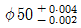
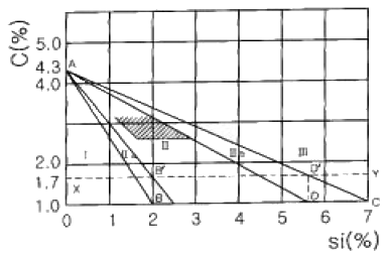
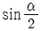
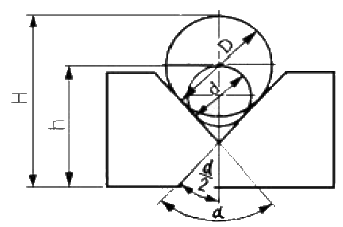
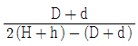
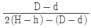
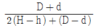
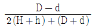

사출(프레스)금형산업기사 (2005-03-20 기출문제)
1과목: 금형설계
1. 다음 중 싱크마크(sink mark)의 발생 방지대책이 아닌 것은?
- 사출압력을 낮게 한다.
- 사출속도를 빠르게 한다.
- 수지의 온도를 적절하게 한다.
- 금형의 온도를 균일하게 한다.
(정답률: 68%)

2. 임의의 곳에 설정되고 이형 변형 성형품 및 국부적으로 밀어내기 힘을 크게 필요로 할 경우에 유리한 이젝터방식은?
- 슬리브 이젝터방식
- 공기압 이젝터방식
- 스프링 이젝터방식
- 핀 이젝터방식
(정답률: 41%)
3. 성형품의 변형발생 요인이 아닌 것은?
- 냉각속도의 차에 의해서 변형이 발생한다.
- 리브에 의한 보강 때문에 변형이 발생한다.
- 내부응력에 의해서 발생한다.
- 코어가 쓰러짐으로써 편육하는 경우이다.
(정답률: 76%)
4. 금형의 온도조절 효과에 속하지 않는 것은?
- 성형품 변형방지
- 치수품질 안정
- 성형품 표면개선
- 성형싸이클 시간 단축
(정답률: 29%)
5. 가동측 형판에 압입되어 있으며 고정형과 가동형을 정확하게 맞추어 주는 금형 부품은?
- 리턴핀
- 가이드핀
- 이젝터핀
- 록크핀
(정답률: 78%)
6. 사출성형에 사용되는 열가소성수지 중 범용수지가 아닌 것은?
- 폴리스티렌(PS)
- 폴리에틸렌(PE)
- 폴리카보네이트(PC)
- 폴리프로필렌(PP)
(정답률: 40%)
7. 플라스틱 금형에서 성형조건에 대한 설명으로 틀린 것은?
- 금형온도가 높아지면 수축률이 작아진다.
- 사출압력이 높으면 수축률이 작아진다.
- 수지온도가 높아지면 수축률이 작아진다.
- 냉각시간이 길면 변형이 적어진다.
(정답률: 31%)
8. 성형품의 표면적이 100 ㎜2이며, 수지상수는 0.6이다. 사이드 게이트로 성형하려 할 때 게이트의 폭은?
- 1.2mm
- 1.5mm
- 1.8mm
- 0.2mm
(정답률: 22%)
9. 1회 숏(shot)의 최대량을 나타내는 값으로 형체력과 함께 사출기의 능력을 대표하는 값(이론적 계산량)을 무엇이라 하는가?
- 가소화능력
- 사출용량
- 사출압력
- 사출율
(정답률: 59%)
10. 높은 정밀도를 성형하기 위한 금형설계에서 가장 좋은 방식은?
- 2개취 금형
- 다수개취 금형
- 3개취 금형
- 1개취 금형
(정답률: 57%)
11. 노칭 스토퍼(사이드 컷)의 주 기능이 아닌 것은?
- 얇은 제품의 가공에 사용한다.
- 이송량이 정확하고 정밀 이송이 가능하다.
- 두꺼운 제품의 가공에 적합하다.
- 자동이송 프레스가공 금형에 사용한다.
(정답률: 65%)
12. 프레스 금형에서 시어각(shear angle)이 없을 때 블랭킹 압력을 구하는 식은? (단, P : 블랭킹 압력, ℓ : 전단윤곽 전장, t : 판 두께, τs : 전단강도이다.)
- P = (ℓ×t) / τs
- P = (τs × ℓ) / t
- P = τs / (ℓ×t)
- P = ℓ × t × τs
(정답률: 76%)
13. 간이 금형의 한 종류인 에폭시수지 금형에 대한 특성으로 틀린 것은?
- 재 용해하여 반복 사용할 수 있다.
- 복잡한 형상도 제작 가능하다.
- 기계 가공성이 좋다.
- 고온에 약하다.
(정답률: 53%)
14. 단조 등 압축가공을 하기 위한 목적으로 만들어진 프레스기계는 다음 중 어느 것인가?
- 크랭크 프레스
- 너클 프레스
- 프레스 브레이크
- 공압 프레스
(정답률: 64%)
15. 다이셋(Die set)의 사용목적으로 해당되지 않는 것은?
- 프레스에 설치가 용이하다.
- 운반이나 보관이 쉽다.
- Die set에 의하여 보호되므로 형이 다소 얇아도 된다.
- 상형의 무게로 인하여 금형의 수명이 줄어든다.
(정답률: 79%)
16. 직경 12mm의 피어싱 펀치로 두께 2mm 소재를 가공하려면 파일럿 핀의 직경을 얼마로 하는 것이 좋은가? (단, 직경 감소계수는 0.04로 한다)
- 10.92mm
- 11.92mm
- 12.92mm
- 13.92mm
(정답률: 70%)
17. 벤딩 공정에 속하지 않는 것은?
- 플랜징(flanging)
- 헤밍(hemming)
- 컬링(curling)
- 벌징(bulging)
(정답률: 26%)
18. 한계 드로잉율이 0.50 이고, 블랭크 직경 50 mm의 스테인리스 강판은 최대 몇 mm인 직경의 펀치에 의해 드로잉 될 수 있는가?
- 15mm
- 25mm
- 30mm
- 40mm
(정답률: 86%)
19. 금형의 제작을 계획, 실시, 평가, 처치의 4단계로 나눌 때 계획단계에서 하는 사항은?
- 금형설계
- 금형제작
- 가공방법의 검토
- 제품의 검사
(정답률: 40%)
20. 블랭킹 작업시 펀칭한 블랭크는 다이구멍 안에 눌러 넣어져 다이 내측벽을 강압하게 되므로 과열되어 늘어붙게 된다. 이러한 현상을 무엇이라 하는가?
- 파울링
- 갈링
- 시저
- 스커핑
(정답률: 49%)
2과목: 기계가공법 및 안전관리
21. 다음 표면가공법 중 가장 정밀도가 높은 것은?
- 래핑
- 연삭
- 버니싱
- 슈퍼 피니싱
(정답률: 59%)
22. 금형용 형판 등 평면 연삭할 때, 떨림현상(Chattering)의 원인으로 잘못 설명된 것은?
- 숫돌 결합도가 너무 클 때
- 연삭기계 자체 진동이 있을 때
- 숫돌입자 크기가 클 때
- 숫돌면 상태가 불량할 때
(정답률: 46%)
23. 슈퍼 피니싱(superfinishing) 작업조건에 대한 다음 설명 중 잘못된 것은?
- 연삭액은 수용성 절삭유를 사용한다.
- 숫돌입자는 주로 Al2O3 또는 SiC를 사용한다.
- 입자의 크기는 #400 ~ 1000 범위에서 주로 사용한다.
- 숫돌의 진폭은 2 ~ 3mm 정도로 한다.
(정답률: 25%)
24. 절삭유의 사용 목적 설명으로 틀린 것은?
- 공구와 칩의 친화력을 돕는다.
- 공구의 냉각을 돕는다.
- 공작물의 냉각을 돕는다.
- 가공표면의 방청작용을 돕는다.
(정답률: 77%)
25. NC에 대한 설명 중 옳지 않은 것은?
- Numerical Control을 줄여서 NC라고 한다.
- 수치제어 기계를 말한다.
- 기계 작업에 필요한 작업 정보를 수치화하고 이 정보를 명령으로 기계를 제어한다.
- 정해진 작업을 수동으로 수행시킨다.
(정답률: 96%)
26. 금형은 내열성, 내식성, 내마모성, 윤활성을 증가시키기 위하여 표면처리하여 사용하는 경우가 많다. 내식성을 증가시키는 주목적으로 표면처리하는 방법이 아닌 것은?
- 칼로라이징
- 실리코나이징
- 크로마이징
- 침탄법
(정답률: 67%)
27. NC가공에서 드웰(G04)은 지령된 점에서 일정시간 멈추기 위하여 사용하는데, 사용할 수 없는 어드레스는?
- X
- U
- P
- S
(정답률: 91%)
28. 밀링커터의 날수 8개 1날당 이송량 0.15mm, 회전수가 540rpm일 때 밀링 테이블의 이송속도는?
- 348 mm/min
- 432 mm/min
- 528 mm/min
- 648 mm/min
(정답률: 70%)
29. 공작물의 가공 모양에 따라서 적당한 모양으로 만든 전극(공구)를 사용하여 구멍뚫기, 조각, 절단 그 밖의 가공을 하는 방법은?
- 초음파가공
- 전해가공
- 방전가공
- 화학연삭
(정답률: 60%)
30. 다음 중 펀치나 다이에 시어각(Shear angle)을 두는 가장 중요한 이유는 무엇인가?
- 펀치나 다이를 보호하기 위하여
- 전단면을 아름답게 하기 위하여
- 전단하중을 줄이기 위하여
- 다이에 대하여 펀치의 편심을 방지하기 위하여
(정답률: 70%)
31.

에서 아래 허용치수 공차는 얼마인가?- 0.04
- -0.02
- -0.06
- 0.06
(정답률: 46%)
32. 제품의 원형을 주축에 고정하고 이 주축을 회전시켜 롤러로 성형하는 방법으로 일명 회전성형법이라고 하는 것은?
- 스피닝
- 휘일론 성형
- 익스팬드
- 하이드로 포밍
(정답률: 59%)
33. 다음 중 절삭가공이 아닌 것은?
- 밀링
- 인발
- 보링
- 래핑
(정답률: 58%)
34. 소성가공의 냉간가공에 대한 특징을 설명한 것으로 잘못된 것은?
- 가공면이 매끄럽고 곱다.
- 기계적 성질이 좋아진다.
- 가공도가 크다.
- 연신율이 작아진다.
(정답률: 41%)
35. 형판지그와 비슷하나 평판에 공작물을 확실히 유지시키기 위하여 클램핑 장치가 있는 지그는?
- 판형 지그
- 각판 지그
- 채널 지그
- 상자형 지그
(정답률: 75%)
36. 치공구는 제품을 생산할 때 정밀하고 호환성이 있는 제품을 생산할 수 있다. 치공구의 장점이 아닌 것은?
- 생산제품의 정도가 향상되고 호환성을 가지게 된다.
- 제품의 검사 시간이나 방법이 간단해 진다.
- 불량율을 크게 줄일 수 있다.
- 제품수량이 많든 적든 관계없이 유리하다.
(정답률: 80%)
37. 다음 중 연삭숫돌의 외형을 수정하여 가공제품의 형상에 맞게 연삭숫돌 외형을 수정하는 작업은?
- 로딩(loading)
- 드레싱(dressing)
- 투루잉(truing)
- 그레이징(glazing)
(정답률: 65%)
38. 호빙 머신에서 사용하는 기어절삭 방법으로 가장 적합한 것은?
- 총형법
- 래크 커터에 의한 법
- 기어 커터에 의한 법
- 창성법
(정답률: 31%)
39. Al을 이용한 금속 침투법은 다음 중 어느 것인가?
- 크로마이징
- 칼로라이징
- 실리코나이징
- 보로나이징
(정답률: 61%)
40. 머시닝센터 프로그램에 사용되는 준비 기능에 있어서 공구 지름 보정 취소 기능은?
- G41
- G42
- G43
- G40
(정답률: 87%)
3과목: 금형재료 및 정밀계측
41. 표점거리가 50(mm)인 실린더형 황동 막대에 장축 방향으로 인장 응력을 24(kgf/mm2)만큼 작용시켰을 때, 표점거리가 0.1(mm)만큼 길이 방향으로 늘어 났다. 황동 막대의 탄성계수 값은? (단, 변형은 완전탄성으로 가정한다.)
- 12000(kgf/mm2)
- 13000(kgf/mm2)
- 21000(kgf/mm2)
- 24000(kgf/mm2)
(정답률: 62%)
42. 열처리 중 헤어크랙(Hair crack)이 생길 우려가 있는 구조용 특수강은 다음 중 어느 것인가?
- Ni-Cr강
- Cr-Mo강
- Si-Mn강
- Mn-S강
(정답률: 57%)
43. 전기 특성을 이용한 코드컨넥터, 적층판 등의 전기부품에 사용되는 수지는?
- 에폭시
- 폴리우레탄
- 염화비닐
- 페놀
(정답률: 40%)
44. 금속의 응고 과정 중 일반적인 결정립의 크기에 대한 설명 중 틀린 것은?
- 결정성장 속도에 비례한다.
- 핵발생 속도에 비례한다.
- 많은 금속은 급냉하면 결정립이 미세화 되는 것이 보통이다.
- 많은 금속은 서냉하면 결정립이 조대화 되는 것이 보통이다.
(정답률: 61%)
45. 탄소와 규소의 함량에 따른 조직분포도(마우러 조직도)의 그림에서 각 구역의 설명 중 틀린 것은?

- Ⅰ구역은 페라이트 + Fe3C 조직의 백주철
- Ⅱ구역은 페라이트 + 흑연 조직의 강력한 회주철
- Ⅱb구역은 Ⅰ구역의 조직에 흑연이 첨가된 것으로 경질의 반주철
- Ⅲ구역은 페라이트 + 흑연 조직의 연질의 회주철
(정답률: 44%)
46. 다이캐스트용 합금의 구비조건으로 적당하지 않은 것은?
- 융점이 높을 것
- 응고 수축에 대한 용탕 보급성이 좋을 것
- 열간 메짐성이 적을 것
- 금형에 점착되지 않을 것
(정답률: 50%)
47. Martensite를 250~400℃에서 뜨임(Tempering)하면 어떤 조직으로 되는가?
- Troostite
- Pearlite
- Austenite
- Sorbite
(정답률: 40%)
48. 알루미늄의 특징 설명으로 틀린 것은?
- 보크사이드로 부터 제련하여 만든다.
- 염류에는 매우 약하며 S(황)에는 특히 약하다.
- 융점이 660℃이며 비중이 2.7의 경금속이다.
- 유동성이 적고 수축율이 크다.
(정답률: 14%)
49. 프리하든강의 경도로는 만족되지 않고 그렇다고 열처리에 의한 변형이 크면 곤란하며 정밀하고 복잡한 캐비티에 적합한 금형재료는?
- 다이스강
- 석출경화강
- 내식강
- 비자성강
(정답률: 38%)
50. 니켈-철 합금으로써 내식성이 좋고 열팽창계수가 20℃에서 철에(1/10)정도이며, 측량기구, 표준기구, 시계추 등으로 가장 많이 사용되는 불변강은?
- 인바
- 초인바
- 엘린바
- 퍼멀로이
(정답률: 29%)
51. 마이크로미터 측정면(앤빌 또는 스핀들)의 평면도를 측정하는데 다음 중 가장 적합한 것은?
- 옵티컬 플랫
- 게이지 블록
- 정반
- 다이얼 게이지
(정답률: 82%)
52. 측장기(測長機)에 대한 설명 중 틀린 것은?
- 횡형 측장기에는 스핀들식과 캐리지형이 있다.
- 모두 아베의 원리에 어긋나는 측정기다.
- 측미현미경에 의하여 길이의 직접 측정을 한다.
- 표준자를 내장하고 있다.
(정답률: 63%)
53. 촉침 회전식 진원도 측정기의 특징을 설명한 것이다. 잘못된 것은?
- 대형물체를 측정하기에 적합하다.
- 스핀들의 회전 정밀도가 좋다.
- 조작이 간단하다.
- 비교적 대형이므로 가격이 비싸다.
(정답률: 32%)
54. 일반적인 나사의 유효 지름 측정법이 아닌 것은?
- 삼침법
- 공구 현미경에 의한 방법
- 버니어캘리퍼스에 의한 방법
- 나사 마이크로미터에 의한 방법
(정답률: 74%)
55. 눈금선 간격이 0.85mm 이고, 최소눈금이 0.01mm인 다이얼 게이지의 감도는 얼마인가?
- 0.85
- 8.5
- 85
- 850
(정답률: 68%)
56. 3차원 측정기 정도시험에서 공간의 측정정도를 구하는 데 필요한 측정기로 가장 중요한 것은?
- 단차 게이지 블록
- 직각자
- 스트레이트 에지
- 전기 수준기
(정답률: 45%)
57. 20℃에서 20mm의 게이지 블록을 손으로 만져서 36 ℃가 되었다. 이 때 생긴 오차는 얼마인가? (단, 열 팽창계수 α = 10 ×10-6/℃ 이다)
- 3.2 ㎛
- 0.32 ㎛
- 6.4 ㎛
- 0.64 ㎛
(정답률: 31%)
58. V홈 제품을 øD인 핀으로 측정한 거리가 H 이고, ød인 핀으로 측정한 거리가 h 일 때, V홈 각

은?




(정답률: 28%)
59. 공기 마이크로미터 종류의 일반적인 형식이 아닌 것은?
- 유량식
- 배압식
- 유속식
- 차동식
(정답률: 73%)
60. 철판의 두께 측정에 가장 적합한 것은?
- 서피스 게이지 (surface gauge)
- 와이어 게이지(wire gauge)
- 리미트 게이지(limit gauge)
- 씨크니스 게이지(thickness gauge)
(정답률: 59%)
이유: 싱크마크는 수지가 금형 내부에서 냉각되어 수축할 때 발생하는 현상이다. 따라서 사출압력을 낮추면 수지가 금형 내부로 충분히 채워지지 않아 싱크마크가 더욱 심해질 수 있다. 따라서 싱크마크 발생 방지를 위해서는 사출압력을 적절하게 유지하고, 사출속도를 빠르게 하거나 수지와 금형의 온도를 적절하게 유지하는 것이 중요하다.